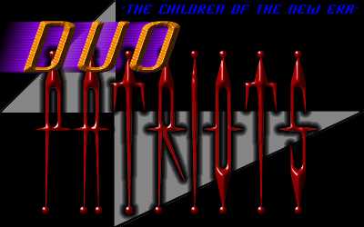

We are the children of the new era, the children of the future, the people from the
Underground. We are everywhere around you, yet we are invisible, invincible. You can’t stop
us, nobody can. We taunt you, haunt you, yet you never will find us. Do not listen to lies
that you are told, but listen to our cries for we tell the truth. The government and media
are liars, you should know that, and if you didn’t, now you do. They lie and kill, that’s
all their good for. Bill Clinton, president of the United States of America, has lied to his
people on several occasions, the most popular being the Lewinski case. Princess Diana was killed,
although indirectly, by the media. How can you listen to them, believe them, if you have the
slightest dignity?
I ask you one thing: for the good of all, do not listen to them. They will fill your mind with
lies and more lies, and make you think we are the enemy. We are not the enemy... they are the enemy;
we are only patriots who seek to protect our countries from their lies. We are the enemy of the corrupt.
Hear our whispers and join us in this cold battle that will never end. For this is just the beginning.
Proudly Hacked By:
The Duo-Patriotz; indig00 & Cheitan
Special "Fuck You's" to: ch0jin
In memory of the great: f1re & Daphne
In association with: Electronic Army and #Protocol
Umm... The word 'Alpha' keeps ringing in my head, but i just cant put a greet... ehh, finger... on it!